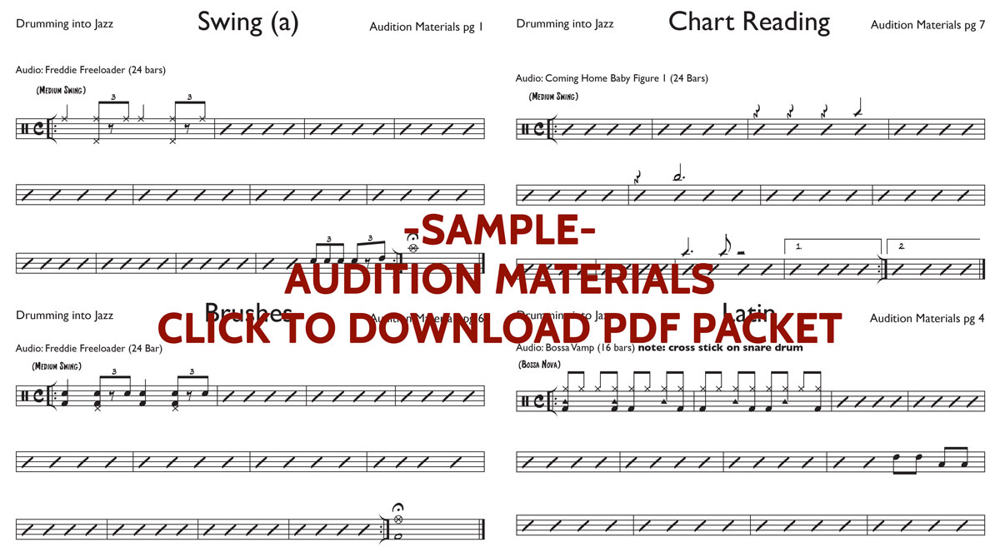

Drumming Into Jazz is designed to take a drummer with no Jazz experience and equip them with all of the fundamentals for playing in Jazz Band.
Requirements
- Drum set
- Drum sticks
- Pair of brushes
- Basic knowledge of reading music
- Headphones to play along with the backing tracks
Description
- Practice Jazz band audition
- 44 downloadable PDF worksheets
- 25 play-along audio tracks
- 54 video lectures/demonstrations
- Music listening assignments for each groove
- Quizzes to help absorb all of the drumming tips and tricks
Sample Audition Materials

Attention Band Directors!!!
This FREE sample packet is intended for band directors to audition drummers for their Jazz Band. If you intend to use these materials in your own practice or with students, please purchase the full class.
Sample Play-Along Audio
These FREE play-along tracks correspond with the sample audition materials packet. If you intend to use these materials in your own practice or with students, please purchase the full class.